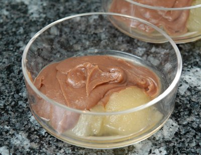

| Zutaten für 4 Personen: | |
| 1 Pack | Marronipurée |
| 4 | Äpfel, Nicht verkochend |
| 3 dl | Apfelsaft |
| 50 g | Zucker |
| 1/2 | Zitrone |
| 50 g | Schokolade |
| 3 EL | Sirup |
Vermicelles 2 - 3 Stunden auftauen lassen.
Äpfel waschen, schälen, halbieren, Kerngehäuse entfernen.
Apfelsaft mit dem Zucker und der halben Zitrone aufkochen. Äpfel dazugeben und 15 - 20 Minuten garkochen.
Die Apfelhälften in 4 Portionenschälchen geben.
Schokolade mit 3 EL Sirup schmelzen; unter die Vermicelles mischen; zu einer Crème verrühren.
Kastaniencrème über die Apfelhälften verteilen.
Dessert 30 Minuten kühl stellen.
Herbert Eigenmann, Code: KNP
Schmeckt fein. Ergibt einen schmackhaften Alltagsdessert. RE 30.9.2009
@LINKBACK_TAG@ @WAKELOCK@